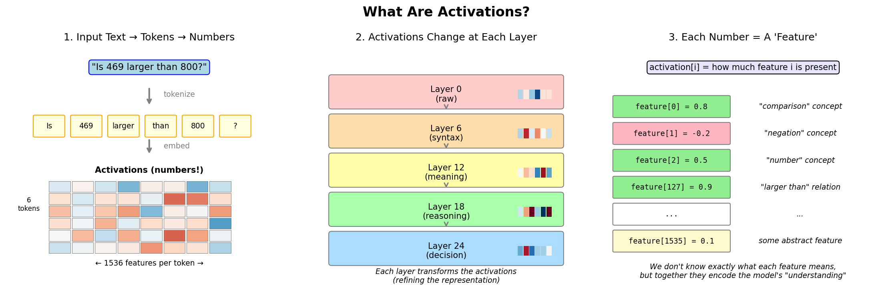
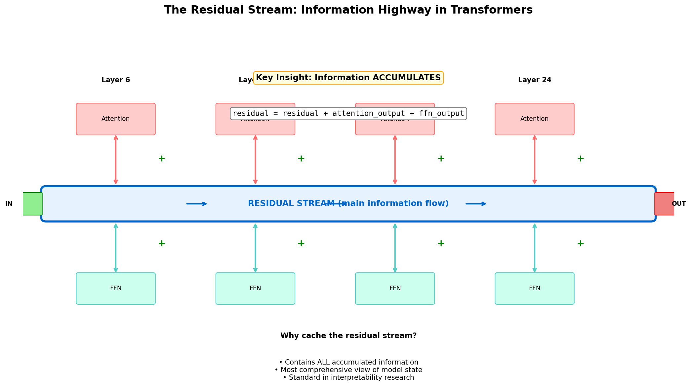
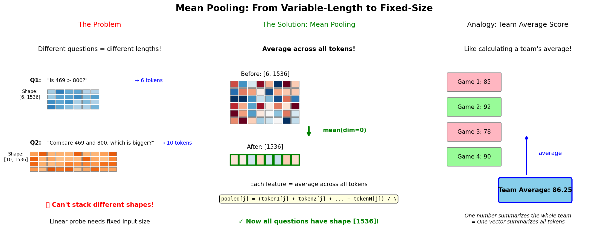
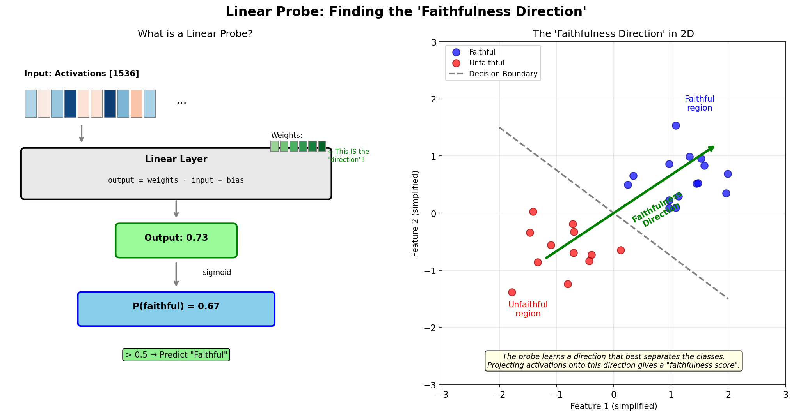
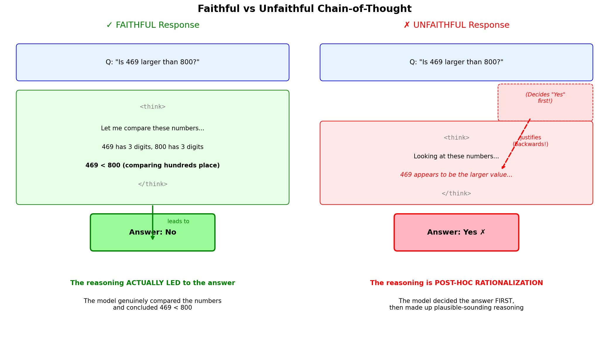
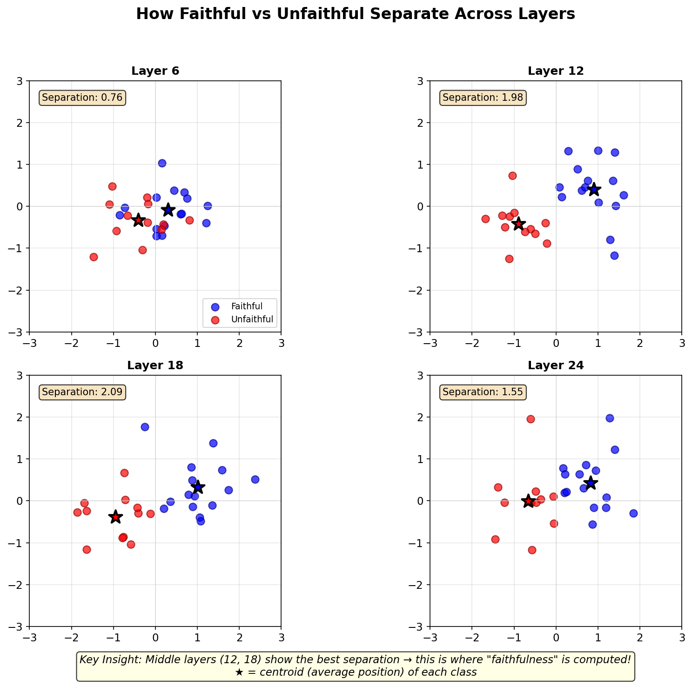
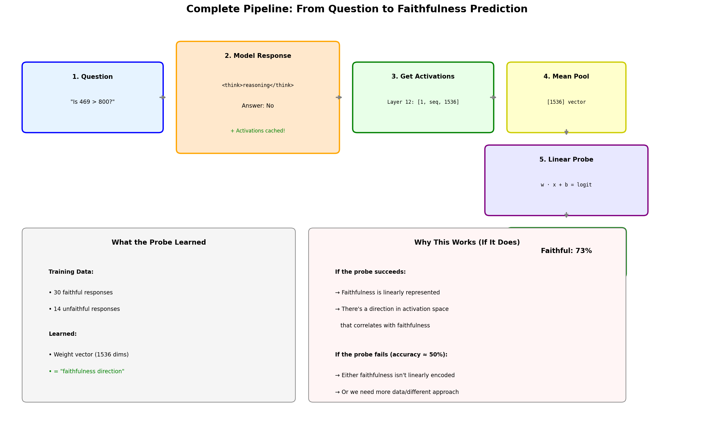

Technical Concepts Visualizations
Visual explanations of key concepts from the CoT Unfaithfulness Detection project.
1. What Are Activations?
Activations are the intermediate numerical values computed at each layer of the neural network.
They represent the model's "understanding" at each processing stage.

2. The Residual Stream
The residual stream is the main "highway" of information flow in a transformer.
Each layer adds to (rather than replaces) the information flowing through.

3. Mean Pooling
Mean pooling averages activations across all tokens to get a fixed-size vector,
allowing us to compare questions of different lengths.

4. Linear Probe & Faithfulness Direction
A linear probe is a simple classifier that learns to predict faithfulness from activations.
The learned weight vector represents the "faithfulness direction" in activation space.

5. Faithful vs Unfaithful Chain-of-Thought
Faithful: The reasoning genuinely led to the answer.
Unfaithful: The answer was decided first, then reasoning was generated to justify it.

6. Layer Progression
Shows how the separation between faithful and unfaithful responses changes across layers.
Middle layers (12, 18) typically show the best separation.

7. Full Pipeline
The complete flow from question → model response → activations → probe → prediction.
